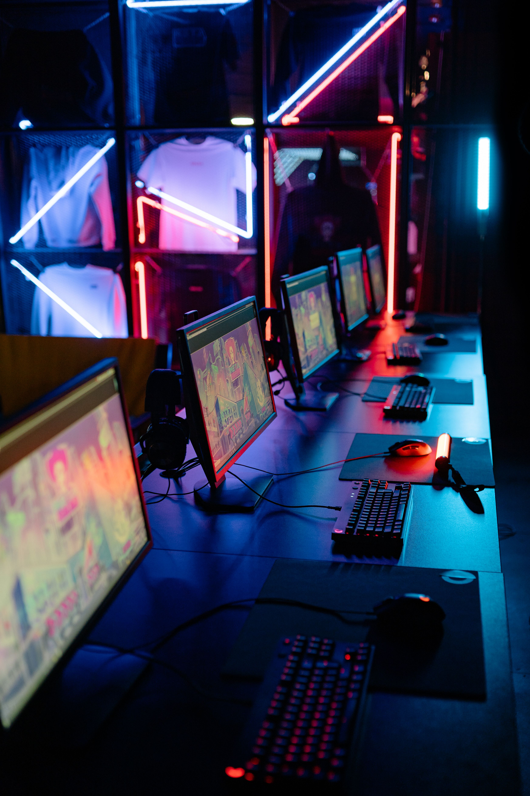

Three events that shaped our major
Written by Tomás Martínez, Felipe Mora, David Moreno, Luna Rodriguez and Valentina Zarate
Event 1: The creation of the Internet – 1983
In 1983, the Internet started to use a system called TCP/IP. This was an important moment because computers could communicate with each other in a better way. Today, the Internet is very important for technology. Data engineers use the Internet to send, receive and work with a lot of information. Without the Internet, many of the technologies that we use today would be very different.
Event 2: The creation of the World Wide Web – 1989
In 1989, Tim Berners-Lee created the World Wide Web. The Web allowed people to access information through websites. This changed the way people use computers and information. Today, we can use websites to study, work, buy products and communicate with other people. For our major, the Web is also important because we can create applications that work with data and artificial intelligence.
Event 3: The growth of Artificial Intelligence – 2010s
During the 2010s, Artificial Intelligence became more popular and powerful. Computers started to learn from large amounts of data and could do more complex tasks. Today, AI can help people with images, text, data and many other things. This event is important for our major because we study both data and artificial intelligence. In the future, AI will probably be part of many different jobs and technologies.